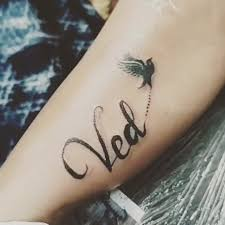
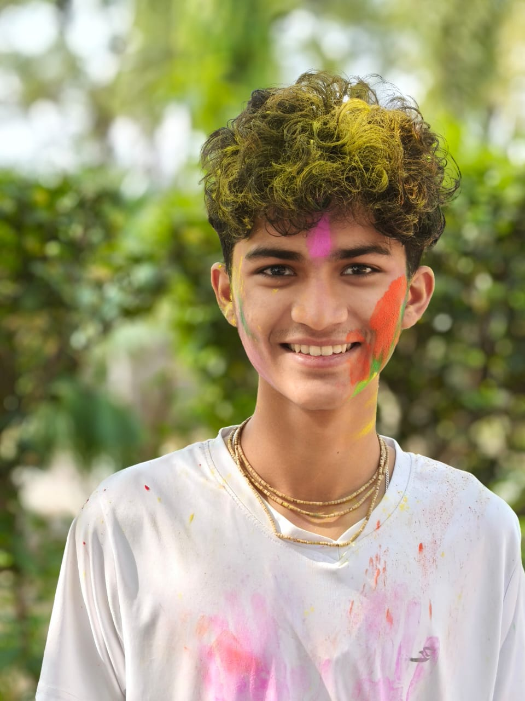
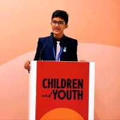
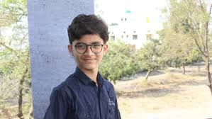
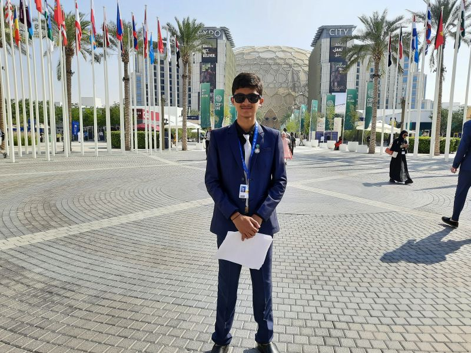

# VED SOLANKE # vednavednya123@gmail.com

Ved Solanke
(Rise-winners)

Ved is an Indian environmental enthusiast and Mercedes-Benz fellow pursuing an education in humanities studies. His Rise project aims to tackle farmers' suicide crisis in Vidarbha by optimizing village crop production and implementing mental health screenings. A Youth Ambassador for the Gates Foundation and HundrED, Ved's initiatives have been recognized at global forums. He aims to become a sustainability leader, applying humanities insights and Buddha's teachings to establish self-sustaining, peaceful societies.


Ved Solanke is a passionate advocate for sustainable agriculture and mental health in the Vidarbha region of India.
Witnessing the devastating impact of farmer suicides in his community, with one occurring every eight hours since 2006,
Ved is dedicated to addressing the root causes of this crisis. With a focus on crop diversity, reducing outsourcing, and implementing a barter system,
Ved's socio-economic initiative aims to make villages self-sufficient in food production and improve the mental well-being of farmers. Having experienced the
loss of family members to suicide and witnessing multiple suicides in his village, Ved understands the urgent need for comprehensive solutions that tackle both
agricultural challenges and mental health issues. His project emphasizes the importance of nature-based solutions and indigenous wisdom to create sustainable income
opportunities and provide long-term psychiatric support for...


Mr. Solanke is defined by confidence, courage, and exceptional communication skills. His commitment to addressing humanitarian issues sets him apart, driven by a philosophy rooted in indigenous wisdom and nature-based solutions. Starting his journey at 15, he solo-traveled from Nagthana to New York representing El Salvador at FWWMUN. He has excelled in numerous MUN events and gained recognition for his project, ‘Socio-Economic Initiative for Agri-food Production and Consumption, a finalist at the World Food Forum. Selected for the Youth Ambassador Program of the Bill and Melinda Gates Foundation, He presented his project at COP28 in Dubai, aspiring to contribute sustainable solutions to global cha llenges.
🌟 A huge congratulations is in order to Cohort 2 Fellow Ved Solanke! 👩🌾 Ved grew up in a village and experienced firsthand the struggles faced by local farmers. Inspired by his father's guidance and driven by a deep passion for change, he dedicated himself to understanding the challenges within his community. His commitment to helping farmers led him to become a RISE Global Winner, bringing hope to many. 🌎👏 This is only the beginning of Ved’s remarkable journey, and we are excited to see how he continues to innovate and make a difference!


